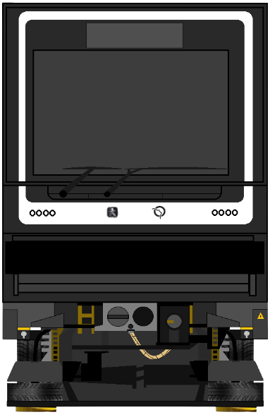
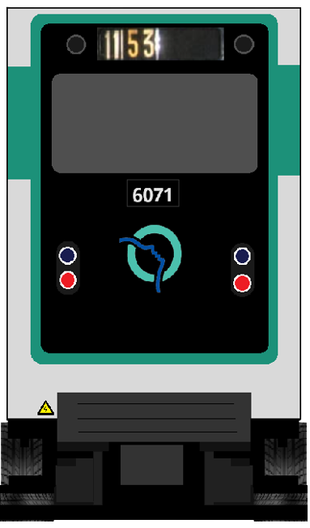
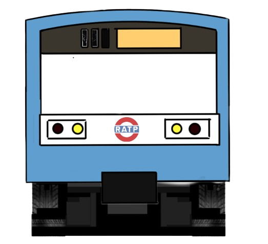

Les Métros
  - MP14 (Ligne 11) [DR GOJO] - MP59 (Ligne 11) [DR GOJO] - MP73 (Ligne 6) [DR GOJO]
Site fait par Dr Gojo
Site 100 % Libre (No Copyright: PUBLIC DOMAIN)
Les créations sont libres d’utilisations pour divers usages !
- MP59 (Ligne 11) [DR GOJO]
- MP73 (Ligne 6) [DR GOJO]